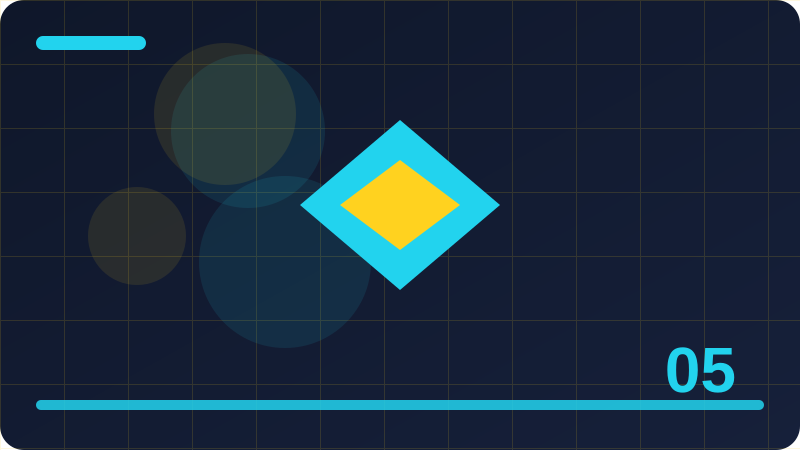

Chapter 5: Booleans, Conditions and Decisions

Section 1
This section looks closely at True and false as answers, one building block inside Booleans, Conditions and Decisions. It is worth slowing down here, because ideas that feel small at first often turn up again in much larger programs, and a clear understanding now will save you confusion later. Think of True and false as answers as a tool you are adding to a growing toolkit: you do not need to master every detail today, but you should know what it is for, when it helps, and what a sensible first example looks like. At its simplest, True and false as answers is about making your intention clear to both the computer and the next person who reads your code. The computer follows instructions literally, so vague thinking becomes a visible mistake, while clear thinking becomes a program that behaves as you expected. That is why examples in this section are deliberately small: with only a few lines to watch, you can see cause and effect without distraction, and you can trace exactly how each part contributes to the result. A short example is the best way to make True and false as answers concrete. Read the code slowly, line by line, and say what you think each line does before you run it. Then run it, compare the output with your prediction, and if they differ, treat that difference as useful information rather than a failure. Programmers learn more from a surprising result than from a result that merely confirms what they already believed, because surprise points to a gap in understanding. Beginners often stumble on True and false as answers for the same few reasons, and naming those reasons in advance makes them easier to avoid. One common problem is rushing past the example without running it, which leaves a fragile understanding that collapses at the first small change. Another is copying code without understanding it, which works until the copied code needs to be adapted. A third is changing several things at once, which makes it impossible to tell which change caused a new result. Beyond the first example, True and false as answers becomes useful when it is combined with ideas from earlier chapters. Programming is rarely about one idea in isolation; it is about combining small, reliable pieces into something larger. That is why this book returns to earlier ideas instead of leaving them behind. Each time you reuse an old idea in a new context, your understanding of both ideas deepens, and your programs become more flexible. To consolidate this section, try a tiny variation of the example before you continue. Change one value, one name, or one order, run the program again, and describe the difference in a sentence. That habit of deliberate variation is how programmers build intuition, and it takes only a few minutes. If you cannot explain the difference, you have found a useful question to investigate, and investigating it now will pay off in the next chapter.
age = 18
print(age >= 18)Check: What is the main idea behind True and false as answers in your own words?
Section 2
Begin with A question code can ask, and with the question it helps you answer while you are learning Booleans, Conditions and Decisions. Every new idea in programming earns its place by solving a real problem, not by sounding impressive, so this section starts from that problem. Once you can say in your own words why A question code can ask exists, the details become much easier to remember, and the code you write afterwards tends to be clearer and more deliberate. The key to A question code can ask is to connect the new idea with something you already understand. Programmers often explain a new concept by comparing it with an everyday action, such as sorting objects, following a recipe, or keeping a list, and that comparison helps at first. But an analogy is only a starting point: the section then moves from the everyday picture to the precise behaviour in Python, so that you are not misled when the real behaviour is slightly different from the picture. Work through the example for A question code can ask as if you were the computer. Keep track of each value as it changes, and notice the order in which things happen, because order matters in programming far more than it does in ordinary writing. A line that looks harmless can change everything that follows, and a small change in order can turn a working program into one that behaves strangely. Tracing by hand is slow, but it builds the mental habit that makes debugging possible later. Watch out for the small details around A question code can ask, because programming rewards attention to detail in a way that everyday language does not. A missing bracket, a misspelt name, or a value in the wrong place can stop a program or change its meaning, and the computer will not guess what you meant. This strictness can feel unfriendly at first, but it is also fair: the same code behaves the same way every time, so once you find a mistake, fixing it fixes the program reliably. Think about where A question code can ask fits into a program you might actually want to write, such as a small tool, a game, a list manager, or a simple calculator. Real programs are built from the same building blocks you are learning here, repeated and combined in different ways. If you can picture a use for A question code can ask outside this book, you are much more likely to remember it, and you will also start to notice it when you read other people's code. Before moving on, summarise A question code can ask in two or three sentences of your own, without looking back at this section. Writing a summary forces you to decide what matters most, and it reveals gaps that silent reading can hide. If your summary feels vague, reread the example and try the variation exercise again.
score = 75
print(score >= 50)Check: When would you use A question code can ask in a small program?
Section 3
In Booleans, Conditions and Decisions, Comparing numbers is one of the ideas you will meet again and again, so it deserves a careful first look rather than a quick glance. This section explains the idea in plain language, shows a short example, and points out the mistakes that beginners most often make. You are not expected to memorise everything here; you are expected to recognise Comparing numbers when you see it, to use it in a small program, and to know where to look when you need a reminder. When you meet Comparing numbers, ask three questions before you write any code. First, what goes in? Second, what comes out? Third, what could go wrong if the input is empty, unusual, or not what you expected? Those three questions work for almost every topic in this book. They turn a passive reading exercise into an active investigation, and they prepare you to test your own code instead of hoping that it happens to be right. The example for Comparing numbers is intentionally ordinary, because ordinary examples reveal the normal behaviour you will rely on every day. Fancy examples can impress, but they often hide the simple rule underneath layers of detail. Once the simple rule is clear, you can apply it to harder problems with confidence, and you will recognise the same rule when it appears inside a longer program written by someone else. As you practise Comparing numbers, expect to make mistakes, and expect those mistakes to be informative. An error message is not a judgement on your ability; it is a clue, often pointing at the line where Python first noticed a problem. Read it, look at that line, and ask what Python expected to find there. Over time, you will start to recognise familiar messages and fix them quickly, which is one of the clearest signs that you are becoming a programmer. There is no single correct way to use Comparing numbers in every situation, and part of learning programming is developing judgement about trade-offs. A shorter solution is not always clearer, and a more general solution is not always better for a small task. For now, favour the version that you can explain to someone else, because code that is easy to explain is usually easy to fix, easy to extend, and easy to trust. Finally, remember that Comparing numbers is a step, not a destination. You will use it, forget parts of it, and relearn it in a richer context as your programs grow. That cycle is normal, and it is not a sign that you have failed to learn. Return to this section whenever you need it, use the idea in a real small program, and let repeated use turn a new idea into a familiar tool. If the result surprises you, read the code again slowly, as if you were explaining each line to a friend.
x = 5
print(x > 3 and x < 10)Check: What mistake are beginners most likely to make with Comparing numbers?
Section 4
This section looks closely at Equal and not equal, one building block inside Booleans, Conditions and Decisions. It is worth slowing down here, because ideas that feel small at first often turn up again in much larger programs, and a clear understanding now will save you confusion later. Think of Equal and not equal as a tool you are adding to a growing toolkit: you do not need to master every detail today, but you should know what it is for, when it helps, and what a sensible first example looks like. At its simplest, Equal and not equal is about making your intention clear to both the computer and the next person who reads your code. The computer follows instructions literally, so vague thinking becomes a visible mistake, while clear thinking becomes a program that behaves as you expected. That is why examples in this section are deliberately small: with only a few lines to watch, you can see cause and effect without distraction, and you can trace exactly how each part contributes to the result. A short example is the best way to make Equal and not equal concrete. Read the code slowly, line by line, and say what you think each line does before you run it. Then run it, compare the output with your prediction, and if they differ, treat that difference as useful information rather than a failure. Programmers learn more from a surprising result than from a result that merely confirms what they already believed, because surprise points to a gap in understanding. Beginners often stumble on Equal and not equal for the same few reasons, and naming those reasons in advance makes them easier to avoid. One common problem is rushing past the example without running it, which leaves a fragile understanding that collapses at the first small change. Another is copying code without understanding it, which works until the copied code needs to be adapted. A third is changing several things at once, which makes it impossible to tell which change caused a new result. Beyond the first example, Equal and not equal becomes useful when it is combined with ideas from earlier chapters. Programming is rarely about one idea in isolation; it is about combining small, reliable pieces into something larger. That is why this book returns to earlier ideas instead of leaving them behind. Each time you reuse an old idea in a new context, your understanding of both ideas deepens, and your programs become more flexible. To consolidate this section, try a tiny variation of the example before you continue. Change one value, one name, or one order, run the program again, and describe the difference in a sentence. That habit of deliberate variation is how programmers build intuition, and it takes only a few minutes. If you cannot explain the difference, you have found a useful question to investigate, and investigating it now will pay off in the next chapter.
ready = True
print(not ready)Check: How would you explain Equal and not equal to a friend who has never coded?
Section 5
Begin with Greater than and less than, and with the question it helps you answer while you are learning Booleans, Conditions and Decisions. Every new idea in programming earns its place by solving a real problem, not by sounding impressive, so this section starts from that problem. Once you can say in your own words why Greater than and less than exists, the details become much easier to remember, and the code you write afterwards tends to be clearer and more deliberate. The key to Greater than and less than is to connect the new idea with something you already understand. Programmers often explain a new concept by comparing it with an everyday action, such as sorting objects, following a recipe, or keeping a list, and that comparison helps at first. But an analogy is only a starting point: the section then moves from the everyday picture to the precise behaviour in Python, so that you are not misled when the real behaviour is slightly different from the picture. Work through the example for Greater than and less than as if you were the computer. Keep track of each value as it changes, and notice the order in which things happen, because order matters in programming far more than it does in ordinary writing. A line that looks harmless can change everything that follows, and a small change in order can turn a working program into one that behaves strangely. Tracing by hand is slow, but it builds the mental habit that makes debugging possible later. Watch out for the small details around Greater than and less than, because programming rewards attention to detail in a way that everyday language does not. A missing bracket, a misspelt name, or a value in the wrong place can stop a program or change its meaning, and the computer will not guess what you meant. This strictness can feel unfriendly at first, but it is also fair: the same code behaves the same way every time, so once you find a mistake, fixing it fixes the program reliably. Think about where Greater than and less than fits into a program you might actually want to write, such as a small tool, a game, a list manager, or a simple calculator. Real programs are built from the same building blocks you are learning here, repeated and combined in different ways. If you can picture a use for Greater than and less than outside this book, you are much more likely to remember it, and you will also start to notice it when you read other people's code. Before moving on, summarise Greater than and less than in two or three sentences of your own, without looking back at this section. Writing a summary forces you to decide what matters most, and it reveals gaps that silent reading can hide. If your summary feels vague, reread the example and try the variation exercise again.
print(4 == 4)Check: What would you change in the example to test Greater than and less than further?
Section 6
In Booleans, Conditions and Decisions, Combining comparisons is one of the ideas you will meet again and again, so it deserves a careful first look rather than a quick glance. This section explains the idea in plain language, shows a short example, and points out the mistakes that beginners most often make. You are not expected to memorise everything here; you are expected to recognise Combining comparisons when you see it, to use it in a small program, and to know where to look when you need a reminder. When you meet Combining comparisons, ask three questions before you write any code. First, what goes in? Second, what comes out? Third, what could go wrong if the input is empty, unusual, or not what you expected? Those three questions work for almost every topic in this book. They turn a passive reading exercise into an active investigation, and they prepare you to test your own code instead of hoping that it happens to be right. The example for Combining comparisons is intentionally ordinary, because ordinary examples reveal the normal behaviour you will rely on every day. Fancy examples can impress, but they often hide the simple rule underneath layers of detail. Once the simple rule is clear, you can apply it to harder problems with confidence, and you will recognise the same rule when it appears inside a longer program written by someone else. As you practise Combining comparisons, expect to make mistakes, and expect those mistakes to be informative. An error message is not a judgement on your ability; it is a clue, often pointing at the line where Python first noticed a problem. Read it, look at that line, and ask what Python expected to find there. Over time, you will start to recognise familiar messages and fix them quickly, which is one of the clearest signs that you are becoming a programmer. There is no single correct way to use Combining comparisons in every situation, and part of learning programming is developing judgement about trade-offs. A shorter solution is not always clearer, and a more general solution is not always better for a small task. For now, favour the version that you can explain to someone else, because code that is easy to explain is usually easy to fix, easy to extend, and easy to trust. Finally, remember that Combining comparisons is a step, not a destination. You will use it, forget parts of it, and relearn it in a richer context as your programs grow. That cycle is normal, and it is not a sign that you have failed to learn. Return to this section whenever you need it, use the idea in a real small program, and let repeated use turn a new idea into a familiar tool. When you are stuck, shrink the problem until the smallest version works, then build it back up one step at a time.
age = 18
print(age >= 18)Check: Why does Combining comparisons matter for programs you want to build later?
Section 7
This section looks closely at The word and, one building block inside Booleans, Conditions and Decisions. It is worth slowing down here, because ideas that feel small at first often turn up again in much larger programs, and a clear understanding now will save you confusion later. Think of The word and as a tool you are adding to a growing toolkit: you do not need to master every detail today, but you should know what it is for, when it helps, and what a sensible first example looks like. At its simplest, The word and is about making your intention clear to both the computer and the next person who reads your code. The computer follows instructions literally, so vague thinking becomes a visible mistake, while clear thinking becomes a program that behaves as you expected. That is why examples in this section are deliberately small: with only a few lines to watch, you can see cause and effect without distraction, and you can trace exactly how each part contributes to the result. A short example is the best way to make The word and concrete. Read the code slowly, line by line, and say what you think each line does before you run it. Then run it, compare the output with your prediction, and if they differ, treat that difference as useful information rather than a failure. Programmers learn more from a surprising result than from a result that merely confirms what they already believed, because surprise points to a gap in understanding. Beginners often stumble on The word and for the same few reasons, and naming those reasons in advance makes them easier to avoid. One common problem is rushing past the example without running it, which leaves a fragile understanding that collapses at the first small change. Another is copying code without understanding it, which works until the copied code needs to be adapted. A third is changing several things at once, which makes it impossible to tell which change caused a new result. Beyond the first example, The word and becomes useful when it is combined with ideas from earlier chapters. Programming is rarely about one idea in isolation; it is about combining small, reliable pieces into something larger. That is why this book returns to earlier ideas instead of leaving them behind. Each time you reuse an old idea in a new context, your understanding of both ideas deepens, and your programs become more flexible. To consolidate this section, try a tiny variation of the example before you continue. Change one value, one name, or one order, run the program again, and describe the difference in a sentence. That habit of deliberate variation is how programmers build intuition, and it takes only a few minutes. If you cannot explain the difference, you have found a useful question to investigate, and investigating it now will pay off in the next chapter.
score = 75
print(score >= 50)Check: What is the main idea behind The word and in your own words?
Section 8
Begin with The word or, and with the question it helps you answer while you are learning Booleans, Conditions and Decisions. Every new idea in programming earns its place by solving a real problem, not by sounding impressive, so this section starts from that problem. Once you can say in your own words why The word or exists, the details become much easier to remember, and the code you write afterwards tends to be clearer and more deliberate. The key to The word or is to connect the new idea with something you already understand. Programmers often explain a new concept by comparing it with an everyday action, such as sorting objects, following a recipe, or keeping a list, and that comparison helps at first. But an analogy is only a starting point: the section then moves from the everyday picture to the precise behaviour in Python, so that you are not misled when the real behaviour is slightly different from the picture. Work through the example for The word or as if you were the computer. Keep track of each value as it changes, and notice the order in which things happen, because order matters in programming far more than it does in ordinary writing. A line that looks harmless can change everything that follows, and a small change in order can turn a working program into one that behaves strangely. Tracing by hand is slow, but it builds the mental habit that makes debugging possible later. Watch out for the small details around The word or, because programming rewards attention to detail in a way that everyday language does not. A missing bracket, a misspelt name, or a value in the wrong place can stop a program or change its meaning, and the computer will not guess what you meant. This strictness can feel unfriendly at first, but it is also fair: the same code behaves the same way every time, so once you find a mistake, fixing it fixes the program reliably. Think about where The word or fits into a program you might actually want to write, such as a small tool, a game, a list manager, or a simple calculator. Real programs are built from the same building blocks you are learning here, repeated and combined in different ways. If you can picture a use for The word or outside this book, you are much more likely to remember it, and you will also start to notice it when you read other people's code. Before moving on, summarise The word or in two or three sentences of your own, without looking back at this section. Writing a summary forces you to decide what matters most, and it reveals gaps that silent reading can hide. If your summary feels vague, reread the example and try the variation exercise again. A short, accurate summary is a better sign of learning than a long page of notes copied from the text.
x = 5
print(x > 3 and x < 10)Check: When would you use The word or in a small program?
Section 9
In Booleans, Conditions and Decisions, The word not is one of the ideas you will meet again and again, so it deserves a careful first look rather than a quick glance. This section explains the idea in plain language, shows a short example, and points out the mistakes that beginners most often make. You are not expected to memorise everything here; you are expected to recognise The word not when you see it, to use it in a small program, and to know where to look when you need a reminder. When you meet The word not, ask three questions before you write any code. First, what goes in? Second, what comes out? Third, what could go wrong if the input is empty, unusual, or not what you expected? Those three questions work for almost every topic in this book. They turn a passive reading exercise into an active investigation, and they prepare you to test your own code instead of hoping that it happens to be right. The example for The word not is intentionally ordinary, because ordinary examples reveal the normal behaviour you will rely on every day. Fancy examples can impress, but they often hide the simple rule underneath layers of detail. Once the simple rule is clear, you can apply it to harder problems with confidence, and you will recognise the same rule when it appears inside a longer program written by someone else. As you practise The word not, expect to make mistakes, and expect those mistakes to be informative. An error message is not a judgement on your ability; it is a clue, often pointing at the line where Python first noticed a problem. Read it, look at that line, and ask what Python expected to find there. Over time, you will start to recognise familiar messages and fix them quickly, which is one of the clearest signs that you are becoming a programmer. There is no single correct way to use The word not in every situation, and part of learning programming is developing judgement about trade-offs. A shorter solution is not always clearer, and a more general solution is not always better for a small task. For now, favour the version that you can explain to someone else, because code that is easy to explain is usually easy to fix, easy to extend, and easy to trust. Finally, remember that The word not is a step, not a destination. You will use it, forget parts of it, and relearn it in a richer context as your programs grow. That cycle is normal, and it is not a sign that you have failed to learn. Return to this section whenever you need it, use the idea in a real small program, and let repeated use turn a new idea into a familiar tool.
ready = True
print(not ready)Check: What mistake are beginners most likely to make with The word not?
Section 10
This section looks closely at Truth tables in plain terms, one building block inside Booleans, Conditions and Decisions. It is worth slowing down here, because ideas that feel small at first often turn up again in much larger programs, and a clear understanding now will save you confusion later. Think of Truth tables in plain terms as a tool you are adding to a growing toolkit: you do not need to master every detail today, but you should know what it is for, when it helps, and what a sensible first example looks like. At its simplest, Truth tables in plain terms is about making your intention clear to both the computer and the next person who reads your code. The computer follows instructions literally, so vague thinking becomes a visible mistake, while clear thinking becomes a program that behaves as you expected. That is why examples in this section are deliberately small: with only a few lines to watch, you can see cause and effect without distraction, and you can trace exactly how each part contributes to the result. A short example is the best way to make Truth tables in plain terms concrete. Read the code slowly, line by line, and say what you think each line does before you run it. Then run it, compare the output with your prediction, and if they differ, treat that difference as useful information rather than a failure. Programmers learn more from a surprising result than from a result that merely confirms what they already believed, because surprise points to a gap in understanding. Beginners often stumble on Truth tables in plain terms for the same few reasons, and naming those reasons in advance makes them easier to avoid. One common problem is rushing past the example without running it, which leaves a fragile understanding that collapses at the first small change. Another is copying code without understanding it, which works until the copied code needs to be adapted. A third is changing several things at once, which makes it impossible to tell which change caused a new result. Beyond the first example, Truth tables in plain terms becomes useful when it is combined with ideas from earlier chapters. Programming is rarely about one idea in isolation; it is about combining small, reliable pieces into something larger. That is why this book returns to earlier ideas instead of leaving them behind. Each time you reuse an old idea in a new context, your understanding of both ideas deepens, and your programs become more flexible. To consolidate this section, try a tiny variation of the example before you continue. Change one value, one name, or one order, run the program again, and describe the difference in a sentence. That habit of deliberate variation is how programmers build intuition, and it takes only a few minutes. If you cannot explain the difference, you have found a useful question to investigate, and investigating it now will pay off in the next chapter.
print(4 == 4)Check: How would you explain Truth tables in plain terms to a friend who has never coded?
Section 11
Begin with If a condition is true, and with the question it helps you answer while you are learning Booleans, Conditions and Decisions. Every new idea in programming earns its place by solving a real problem, not by sounding impressive, so this section starts from that problem. Once you can say in your own words why If a condition is true exists, the details become much easier to remember, and the code you write afterwards tends to be clearer and more deliberate. The key to If a condition is true is to connect the new idea with something you already understand. Programmers often explain a new concept by comparing it with an everyday action, such as sorting objects, following a recipe, or keeping a list, and that comparison helps at first. But an analogy is only a starting point: the section then moves from the everyday picture to the precise behaviour in Python, so that you are not misled when the real behaviour is slightly different from the picture. Work through the example for If a condition is true as if you were the computer. Keep track of each value as it changes, and notice the order in which things happen, because order matters in programming far more than it does in ordinary writing. A line that looks harmless can change everything that follows, and a small change in order can turn a working program into one that behaves strangely. Tracing by hand is slow, but it builds the mental habit that makes debugging possible later. Watch out for the small details around If a condition is true, because programming rewards attention to detail in a way that everyday language does not. A missing bracket, a misspelt name, or a value in the wrong place can stop a program or change its meaning, and the computer will not guess what you meant. This strictness can feel unfriendly at first, but it is also fair: the same code behaves the same way every time, so once you find a mistake, fixing it fixes the program reliably. Think about where If a condition is true fits into a program you might actually want to write, such as a small tool, a game, a list manager, or a simple calculator. Real programs are built from the same building blocks you are learning here, repeated and combined in different ways. If you can picture a use for If a condition is true outside this book, you are much more likely to remember it, and you will also start to notice it when you read other people's code. Before moving on, summarise If a condition is true in two or three sentences of your own, without looking back at this section. Writing a summary forces you to decide what matters most, and it reveals gaps that silent reading can hide. If your summary feels vague, reread the example and try the variation exercise again.
age = 18
print(age >= 18)Check: What would you change in the example to test If a condition is true further?
Section 12
In Booleans, Conditions and Decisions, What happens when it is false is one of the ideas you will meet again and again, so it deserves a careful first look rather than a quick glance. This section explains the idea in plain language, shows a short example, and points out the mistakes that beginners most often make. You are not expected to memorise everything here; you are expected to recognise What happens when it is false when you see it, to use it in a small program, and to know where to look when you need a reminder. When you meet What happens when it is false, ask three questions before you write any code. First, what goes in? Second, what comes out? Third, what could go wrong if the input is empty, unusual, or not what you expected? Those three questions work for almost every topic in this book. They turn a passive reading exercise into an active investigation, and they prepare you to test your own code instead of hoping that it happens to be right. The example for What happens when it is false is intentionally ordinary, because ordinary examples reveal the normal behaviour you will rely on every day. Fancy examples can impress, but they often hide the simple rule underneath layers of detail. Once the simple rule is clear, you can apply it to harder problems with confidence, and you will recognise the same rule when it appears inside a longer program written by someone else. As you practise What happens when it is false, expect to make mistakes, and expect those mistakes to be informative. An error message is not a judgement on your ability; it is a clue, often pointing at the line where Python first noticed a problem. Read it, look at that line, and ask what Python expected to find there. Over time, you will start to recognise familiar messages and fix them quickly, which is one of the clearest signs that you are becoming a programmer. There is no single correct way to use What happens when it is false in every situation, and part of learning programming is developing judgement about trade-offs. A shorter solution is not always clearer, and a more general solution is not always better for a small task. For now, favour the version that you can explain to someone else, because code that is easy to explain is usually easy to fix, easy to extend, and easy to trust. Finally, remember that What happens when it is false is a step, not a destination. You will use it, forget parts of it, and relearn it in a richer context as your programs grow. That cycle is normal, and it is not a sign that you have failed to learn. Return to this section whenever you need it, use the idea in a real small program, and let repeated use turn a new idea into a familiar tool.
score = 75
print(score >= 50)Check: Why does What happens when it is false matter for programs you want to build later?
Section 13
This section looks closely at Otherwise do this, one building block inside Booleans, Conditions and Decisions. It is worth slowing down here, because ideas that feel small at first often turn up again in much larger programs, and a clear understanding now will save you confusion later. Think of Otherwise do this as a tool you are adding to a growing toolkit: you do not need to master every detail today, but you should know what it is for, when it helps, and what a sensible first example looks like. At its simplest, Otherwise do this is about making your intention clear to both the computer and the next person who reads your code. The computer follows instructions literally, so vague thinking becomes a visible mistake, while clear thinking becomes a program that behaves as you expected. That is why examples in this section are deliberately small: with only a few lines to watch, you can see cause and effect without distraction, and you can trace exactly how each part contributes to the result. A short example is the best way to make Otherwise do this concrete. Read the code slowly, line by line, and say what you think each line does before you run it. Then run it, compare the output with your prediction, and if they differ, treat that difference as useful information rather than a failure. Programmers learn more from a surprising result than from a result that merely confirms what they already believed, because surprise points to a gap in understanding. Beginners often stumble on Otherwise do this for the same few reasons, and naming those reasons in advance makes them easier to avoid. One common problem is rushing past the example without running it, which leaves a fragile understanding that collapses at the first small change. Another is copying code without understanding it, which works until the copied code needs to be adapted. A third is changing several things at once, which makes it impossible to tell which change caused a new result. Beyond the first example, Otherwise do this becomes useful when it is combined with ideas from earlier chapters. Programming is rarely about one idea in isolation; it is about combining small, reliable pieces into something larger. That is why this book returns to earlier ideas instead of leaving them behind. Each time you reuse an old idea in a new context, your understanding of both ideas deepens, and your programs become more flexible. To consolidate this section, try a tiny variation of the example before you continue. Change one value, one name, or one order, run the program again, and describe the difference in a sentence. That habit of deliberate variation is how programmers build intuition, and it takes only a few minutes. If you cannot explain the difference, you have found a useful question to investigate, and investigating it now will pay off in the next chapter.
x = 5
print(x > 3 and x < 10)Check: What is the main idea behind Otherwise do this in your own words?
Section 14
Begin with Chains of conditions, and with the question it helps you answer while you are learning Booleans, Conditions and Decisions. Every new idea in programming earns its place by solving a real problem, not by sounding impressive, so this section starts from that problem. Once you can say in your own words why Chains of conditions exists, the details become much easier to remember, and the code you write afterwards tends to be clearer and more deliberate. The key to Chains of conditions is to connect the new idea with something you already understand. Programmers often explain a new concept by comparing it with an everyday action, such as sorting objects, following a recipe, or keeping a list, and that comparison helps at first. But an analogy is only a starting point: the section then moves from the everyday picture to the precise behaviour in Python, so that you are not misled when the real behaviour is slightly different from the picture. Work through the example for Chains of conditions as if you were the computer. Keep track of each value as it changes, and notice the order in which things happen, because order matters in programming far more than it does in ordinary writing. A line that looks harmless can change everything that follows, and a small change in order can turn a working program into one that behaves strangely. Tracing by hand is slow, but it builds the mental habit that makes debugging possible later. Watch out for the small details around Chains of conditions, because programming rewards attention to detail in a way that everyday language does not. A missing bracket, a misspelt name, or a value in the wrong place can stop a program or change its meaning, and the computer will not guess what you meant. This strictness can feel unfriendly at first, but it is also fair: the same code behaves the same way every time, so once you find a mistake, fixing it fixes the program reliably. Think about where Chains of conditions fits into a program you might actually want to write, such as a small tool, a game, a list manager, or a simple calculator. Real programs are built from the same building blocks you are learning here, repeated and combined in different ways. If you can picture a use for Chains of conditions outside this book, you are much more likely to remember it, and you will also start to notice it when you read other people's code. Before moving on, summarise Chains of conditions in two or three sentences of your own, without looking back at this section. Writing a summary forces you to decide what matters most, and it reveals gaps that silent reading can hide. If your summary feels vague, reread the example and try the variation exercise again. A short, accurate summary is a better sign of learning than a long page of notes copied from the text.
ready = True
print(not ready)Check: When would you use Chains of conditions in a small program?
Section 15
In Booleans, Conditions and Decisions, Choosing between many options is one of the ideas you will meet again and again, so it deserves a careful first look rather than a quick glance. This section explains the idea in plain language, shows a short example, and points out the mistakes that beginners most often make. You are not expected to memorise everything here; you are expected to recognise Choosing between many options when you see it, to use it in a small program, and to know where to look when you need a reminder. When you meet Choosing between many options, ask three questions before you write any code. First, what goes in? Second, what comes out? Third, what could go wrong if the input is empty, unusual, or not what you expected? Those three questions work for almost every topic in this book. They turn a passive reading exercise into an active investigation, and they prepare you to test your own code instead of hoping that it happens to be right. The example for Choosing between many options is intentionally ordinary, because ordinary examples reveal the normal behaviour you will rely on every day. Fancy examples can impress, but they often hide the simple rule underneath layers of detail. Once the simple rule is clear, you can apply it to harder problems with confidence, and you will recognise the same rule when it appears inside a longer program written by someone else. As you practise Choosing between many options, expect to make mistakes, and expect those mistakes to be informative. An error message is not a judgement on your ability; it is a clue, often pointing at the line where Python first noticed a problem. Read it, look at that line, and ask what Python expected to find there. Over time, you will start to recognise familiar messages and fix them quickly, which is one of the clearest signs that you are becoming a programmer. There is no single correct way to use Choosing between many options in every situation, and part of learning programming is developing judgement about trade-offs. A shorter solution is not always clearer, and a more general solution is not always better for a small task. For now, favour the version that you can explain to someone else, because code that is easy to explain is usually easy to fix, easy to extend, and easy to trust. Finally, remember that Choosing between many options is a step, not a destination. You will use it, forget parts of it, and relearn it in a richer context as your programs grow. That cycle is normal, and it is not a sign that you have failed to learn. Return to this section whenever you need it, use the idea in a real small program, and let repeated use turn a new idea into a familiar tool.
print(4 == 4)Check: What mistake are beginners most likely to make with Choosing between many options?
Section 16
This section looks closely at Nested decisions, one building block inside Booleans, Conditions and Decisions. It is worth slowing down here, because ideas that feel small at first often turn up again in much larger programs, and a clear understanding now will save you confusion later. Think of Nested decisions as a tool you are adding to a growing toolkit: you do not need to master every detail today, but you should know what it is for, when it helps, and what a sensible first example looks like. At its simplest, Nested decisions is about making your intention clear to both the computer and the next person who reads your code. The computer follows instructions literally, so vague thinking becomes a visible mistake, while clear thinking becomes a program that behaves as you expected. That is why examples in this section are deliberately small: with only a few lines to watch, you can see cause and effect without distraction, and you can trace exactly how each part contributes to the result. A short example is the best way to make Nested decisions concrete. Read the code slowly, line by line, and say what you think each line does before you run it. Then run it, compare the output with your prediction, and if they differ, treat that difference as useful information rather than a failure. Programmers learn more from a surprising result than from a result that merely confirms what they already believed, because surprise points to a gap in understanding. Beginners often stumble on Nested decisions for the same few reasons, and naming those reasons in advance makes them easier to avoid. One common problem is rushing past the example without running it, which leaves a fragile understanding that collapses at the first small change. Another is copying code without understanding it, which works until the copied code needs to be adapted. A third is changing several things at once, which makes it impossible to tell which change caused a new result. Beyond the first example, Nested decisions becomes useful when it is combined with ideas from earlier chapters. Programming is rarely about one idea in isolation; it is about combining small, reliable pieces into something larger. That is why this book returns to earlier ideas instead of leaving them behind. Each time you reuse an old idea in a new context, your understanding of both ideas deepens, and your programs become more flexible. To consolidate this section, try a tiny variation of the example before you continue. Change one value, one name, or one order, run the program again, and describe the difference in a sentence. That habit of deliberate variation is how programmers build intuition, and it takes only a few minutes. If you cannot explain the difference, you have found a useful question to investigate, and investigating it now will pay off in the next chapter.
age = 18
print(age >= 18)Check: How would you explain Nested decisions to a friend who has never coded?
Section 17
Begin with Keeping conditions readable, and with the question it helps you answer while you are learning Booleans, Conditions and Decisions. Every new idea in programming earns its place by solving a real problem, not by sounding impressive, so this section starts from that problem. Once you can say in your own words why Keeping conditions readable exists, the details become much easier to remember, and the code you write afterwards tends to be clearer and more deliberate. The key to Keeping conditions readable is to connect the new idea with something you already understand. Programmers often explain a new concept by comparing it with an everyday action, such as sorting objects, following a recipe, or keeping a list, and that comparison helps at first. But an analogy is only a starting point: the section then moves from the everyday picture to the precise behaviour in Python, so that you are not misled when the real behaviour is slightly different from the picture. Work through the example for Keeping conditions readable as if you were the computer. Keep track of each value as it changes, and notice the order in which things happen, because order matters in programming far more than it does in ordinary writing. A line that looks harmless can change everything that follows, and a small change in order can turn a working program into one that behaves strangely. Tracing by hand is slow, but it builds the mental habit that makes debugging possible later. Watch out for the small details around Keeping conditions readable, because programming rewards attention to detail in a way that everyday language does not. A missing bracket, a misspelt name, or a value in the wrong place can stop a program or change its meaning, and the computer will not guess what you meant. This strictness can feel unfriendly at first, but it is also fair: the same code behaves the same way every time, so once you find a mistake, fixing it fixes the program reliably. Think about where Keeping conditions readable fits into a program you might actually want to write, such as a small tool, a game, a list manager, or a simple calculator. Real programs are built from the same building blocks you are learning here, repeated and combined in different ways. If you can picture a use for Keeping conditions readable outside this book, you are much more likely to remember it, and you will also start to notice it when you read other people's code. Before moving on, summarise Keeping conditions readable in two or three sentences of your own, without looking back at this section. Writing a summary forces you to decide what matters most, and it reveals gaps that silent reading can hide. If your summary feels vague, reread the example and try the variation exercise again. A short, accurate summary is a better sign of learning than a long page of notes copied from the text.
score = 75
print(score >= 50)Check: What would you change in the example to test Keeping conditions readable further?
Section 18
In Booleans, Conditions and Decisions, Decisions in a small game is one of the ideas you will meet again and again, so it deserves a careful first look rather than a quick glance. This section explains the idea in plain language, shows a short example, and points out the mistakes that beginners most often make. You are not expected to memorise everything here; you are expected to recognise Decisions in a small game when you see it, to use it in a small program, and to know where to look when you need a reminder. When you meet Decisions in a small game, ask three questions before you write any code. First, what goes in? Second, what comes out? Third, what could go wrong if the input is empty, unusual, or not what you expected? Those three questions work for almost every topic in this book. They turn a passive reading exercise into an active investigation, and they prepare you to test your own code instead of hoping that it happens to be right. The example for Decisions in a small game is intentionally ordinary, because ordinary examples reveal the normal behaviour you will rely on every day. Fancy examples can impress, but they often hide the simple rule underneath layers of detail. Once the simple rule is clear, you can apply it to harder problems with confidence, and you will recognise the same rule when it appears inside a longer program written by someone else. As you practise Decisions in a small game, expect to make mistakes, and expect those mistakes to be informative. An error message is not a judgement on your ability; it is a clue, often pointing at the line where Python first noticed a problem. Read it, look at that line, and ask what Python expected to find there. Over time, you will start to recognise familiar messages and fix them quickly, which is one of the clearest signs that you are becoming a programmer. There is no single correct way to use Decisions in a small game in every situation, and part of learning programming is developing judgement about trade-offs. A shorter solution is not always clearer, and a more general solution is not always better for a small task. For now, favour the version that you can explain to someone else, because code that is easy to explain is usually easy to fix, easy to extend, and easy to trust. Finally, remember that Decisions in a small game is a step, not a destination. You will use it, forget parts of it, and relearn it in a richer context as your programs grow. That cycle is normal, and it is not a sign that you have failed to learn. Return to this section whenever you need it, use the idea in a real small program, and let repeated use turn a new idea into a familiar tool.
x = 5
print(x > 3 and x < 10)Check: Why does Decisions in a small game matter for programs you want to build later?
Section 19
This section looks closely at Checking a password length, one building block inside Booleans, Conditions and Decisions. It is worth slowing down here, because ideas that feel small at first often turn up again in much larger programs, and a clear understanding now will save you confusion later. Think of Checking a password length as a tool you are adding to a growing toolkit: you do not need to master every detail today, but you should know what it is for, when it helps, and what a sensible first example looks like. At its simplest, Checking a password length is about making your intention clear to both the computer and the next person who reads your code. The computer follows instructions literally, so vague thinking becomes a visible mistake, while clear thinking becomes a program that behaves as you expected. That is why examples in this section are deliberately small: with only a few lines to watch, you can see cause and effect without distraction, and you can trace exactly how each part contributes to the result. A short example is the best way to make Checking a password length concrete. Read the code slowly, line by line, and say what you think each line does before you run it. Then run it, compare the output with your prediction, and if they differ, treat that difference as useful information rather than a failure. Programmers learn more from a surprising result than from a result that merely confirms what they already believed, because surprise points to a gap in understanding. Beginners often stumble on Checking a password length for the same few reasons, and naming those reasons in advance makes them easier to avoid. One common problem is rushing past the example without running it, which leaves a fragile understanding that collapses at the first small change. Another is copying code without understanding it, which works until the copied code needs to be adapted. A third is changing several things at once, which makes it impossible to tell which change caused a new result. Beyond the first example, Checking a password length becomes useful when it is combined with ideas from earlier chapters. Programming is rarely about one idea in isolation; it is about combining small, reliable pieces into something larger. That is why this book returns to earlier ideas instead of leaving them behind. Each time you reuse an old idea in a new context, your understanding of both ideas deepens, and your programs become more flexible. To consolidate this section, try a tiny variation of the example before you continue. Change one value, one name, or one order, run the program again, and describe the difference in a sentence. That habit of deliberate variation is how programmers build intuition, and it takes only a few minutes. If you cannot explain the difference, you have found a useful question to investigate, and investigating it now will pay off in the next chapter.
ready = True
print(not ready)Check: What is the main idea behind Checking a password length in your own words?
Section 20
Begin with Checking an age range, and with the question it helps you answer while you are learning Booleans, Conditions and Decisions. Every new idea in programming earns its place by solving a real problem, not by sounding impressive, so this section starts from that problem. Once you can say in your own words why Checking an age range exists, the details become much easier to remember, and the code you write afterwards tends to be clearer and more deliberate. The key to Checking an age range is to connect the new idea with something you already understand. Programmers often explain a new concept by comparing it with an everyday action, such as sorting objects, following a recipe, or keeping a list, and that comparison helps at first. But an analogy is only a starting point: the section then moves from the everyday picture to the precise behaviour in Python, so that you are not misled when the real behaviour is slightly different from the picture. Work through the example for Checking an age range as if you were the computer. Keep track of each value as it changes, and notice the order in which things happen, because order matters in programming far more than it does in ordinary writing. A line that looks harmless can change everything that follows, and a small change in order can turn a working program into one that behaves strangely. Tracing by hand is slow, but it builds the mental habit that makes debugging possible later. Watch out for the small details around Checking an age range, because programming rewards attention to detail in a way that everyday language does not. A missing bracket, a misspelt name, or a value in the wrong place can stop a program or change its meaning, and the computer will not guess what you meant. This strictness can feel unfriendly at first, but it is also fair: the same code behaves the same way every time, so once you find a mistake, fixing it fixes the program reliably. Think about where Checking an age range fits into a program you might actually want to write, such as a small tool, a game, a list manager, or a simple calculator. Real programs are built from the same building blocks you are learning here, repeated and combined in different ways. If you can picture a use for Checking an age range outside this book, you are much more likely to remember it, and you will also start to notice it when you read other people's code. Before moving on, summarise Checking an age range in two or three sentences of your own, without looking back at this section. Writing a summary forces you to decide what matters most, and it reveals gaps that silent reading can hide. If your summary feels vague, reread the example and try the variation exercise again.
print(4 == 4)Check: When would you use Checking an age range in a small program?
Section 21
In Booleans, Conditions and Decisions, Checking a grade boundary is one of the ideas you will meet again and again, so it deserves a careful first look rather than a quick glance. This section explains the idea in plain language, shows a short example, and points out the mistakes that beginners most often make. You are not expected to memorise everything here; you are expected to recognise Checking a grade boundary when you see it, to use it in a small program, and to know where to look when you need a reminder. When you meet Checking a grade boundary, ask three questions before you write any code. First, what goes in? Second, what comes out? Third, what could go wrong if the input is empty, unusual, or not what you expected? Those three questions work for almost every topic in this book. They turn a passive reading exercise into an active investigation, and they prepare you to test your own code instead of hoping that it happens to be right. The example for Checking a grade boundary is intentionally ordinary, because ordinary examples reveal the normal behaviour you will rely on every day. Fancy examples can impress, but they often hide the simple rule underneath layers of detail. Once the simple rule is clear, you can apply it to harder problems with confidence, and you will recognise the same rule when it appears inside a longer program written by someone else. As you practise Checking a grade boundary, expect to make mistakes, and expect those mistakes to be informative. An error message is not a judgement on your ability; it is a clue, often pointing at the line where Python first noticed a problem. Read it, look at that line, and ask what Python expected to find there. Over time, you will start to recognise familiar messages and fix them quickly, which is one of the clearest signs that you are becoming a programmer. There is no single correct way to use Checking a grade boundary in every situation, and part of learning programming is developing judgement about trade-offs. A shorter solution is not always clearer, and a more general solution is not always better for a small task. For now, favour the version that you can explain to someone else, because code that is easy to explain is usually easy to fix, easy to extend, and easy to trust. Finally, remember that Checking a grade boundary is a step, not a destination. You will use it, forget parts of it, and relearn it in a richer context as your programs grow. That cycle is normal, and it is not a sign that you have failed to learn. Return to this section whenever you need it, use the idea in a real small program, and let repeated use turn a new idea into a familiar tool.
age = 18
print(age >= 18)Check: What mistake are beginners most likely to make with Checking a grade boundary?
Section 22
This section looks closely at Guards at the start of code, one building block inside Booleans, Conditions and Decisions. It is worth slowing down here, because ideas that feel small at first often turn up again in much larger programs, and a clear understanding now will save you confusion later. Think of Guards at the start of code as a tool you are adding to a growing toolkit: you do not need to master every detail today, but you should know what it is for, when it helps, and what a sensible first example looks like. At its simplest, Guards at the start of code is about making your intention clear to both the computer and the next person who reads your code. The computer follows instructions literally, so vague thinking becomes a visible mistake, while clear thinking becomes a program that behaves as you expected. That is why examples in this section are deliberately small: with only a few lines to watch, you can see cause and effect without distraction, and you can trace exactly how each part contributes to the result. A short example is the best way to make Guards at the start of code concrete. Read the code slowly, line by line, and say what you think each line does before you run it. Then run it, compare the output with your prediction, and if they differ, treat that difference as useful information rather than a failure. Programmers learn more from a surprising result than from a result that merely confirms what they already believed, because surprise points to a gap in understanding. Beginners often stumble on Guards at the start of code for the same few reasons, and naming those reasons in advance makes them easier to avoid. One common problem is rushing past the example without running it, which leaves a fragile understanding that collapses at the first small change. Another is copying code without understanding it, which works until the copied code needs to be adapted. A third is changing several things at once, which makes it impossible to tell which change caused a new result. Beyond the first example, Guards at the start of code becomes useful when it is combined with ideas from earlier chapters. Programming is rarely about one idea in isolation; it is about combining small, reliable pieces into something larger. That is why this book returns to earlier ideas instead of leaving them behind. Each time you reuse an old idea in a new context, your understanding of both ideas deepens, and your programs become more flexible. To consolidate this section, try a tiny variation of the example before you continue. Change one value, one name, or one order, run the program again, and describe the difference in a sentence. That habit of deliberate variation is how programmers build intuition, and it takes only a few minutes.
score = 75
print(score >= 50)Check: How would you explain Guards at the start of code to a friend who has never coded?
Section 23
Begin with Default choices, and with the question it helps you answer while you are learning Booleans, Conditions and Decisions. Every new idea in programming earns its place by solving a real problem, not by sounding impressive, so this section starts from that problem. Once you can say in your own words why Default choices exists, the details become much easier to remember, and the code you write afterwards tends to be clearer and more deliberate. The key to Default choices is to connect the new idea with something you already understand. Programmers often explain a new concept by comparing it with an everyday action, such as sorting objects, following a recipe, or keeping a list, and that comparison helps at first. But an analogy is only a starting point: the section then moves from the everyday picture to the precise behaviour in Python, so that you are not misled when the real behaviour is slightly different from the picture. Work through the example for Default choices as if you were the computer. Keep track of each value as it changes, and notice the order in which things happen, because order matters in programming far more than it does in ordinary writing. A line that looks harmless can change everything that follows, and a small change in order can turn a working program into one that behaves strangely. Tracing by hand is slow, but it builds the mental habit that makes debugging possible later. Watch out for the small details around Default choices, because programming rewards attention to detail in a way that everyday language does not. A missing bracket, a misspelt name, or a value in the wrong place can stop a program or change its meaning, and the computer will not guess what you meant. This strictness can feel unfriendly at first, but it is also fair: the same code behaves the same way every time, so once you find a mistake, fixing it fixes the program reliably. Think about where Default choices fits into a program you might actually want to write, such as a small tool, a game, a list manager, or a simple calculator. Real programs are built from the same building blocks you are learning here, repeated and combined in different ways. If you can picture a use for Default choices outside this book, you are much more likely to remember it, and you will also start to notice it when you read other people's code. Before moving on, summarise Default choices in two or three sentences of your own, without looking back at this section. Writing a summary forces you to decide what matters most, and it reveals gaps that silent reading can hide. If your summary feels vague, reread the example and try the variation exercise again. A short, accurate summary is a better sign of learning than a long page of notes copied from the text.
x = 5
print(x > 3 and x < 10)Check: What would you change in the example to test Default choices further?
Section 24
In Booleans, Conditions and Decisions, Decisions and user input is one of the ideas you will meet again and again, so it deserves a careful first look rather than a quick glance. This section explains the idea in plain language, shows a short example, and points out the mistakes that beginners most often make. You are not expected to memorise everything here; you are expected to recognise Decisions and user input when you see it, to use it in a small program, and to know where to look when you need a reminder. When you meet Decisions and user input, ask three questions before you write any code. First, what goes in? Second, what comes out? Third, what could go wrong if the input is empty, unusual, or not what you expected? Those three questions work for almost every topic in this book. They turn a passive reading exercise into an active investigation, and they prepare you to test your own code instead of hoping that it happens to be right. The example for Decisions and user input is intentionally ordinary, because ordinary examples reveal the normal behaviour you will rely on every day. Fancy examples can impress, but they often hide the simple rule underneath layers of detail. Once the simple rule is clear, you can apply it to harder problems with confidence, and you will recognise the same rule when it appears inside a longer program written by someone else. As you practise Decisions and user input, expect to make mistakes, and expect those mistakes to be informative. An error message is not a judgement on your ability; it is a clue, often pointing at the line where Python first noticed a problem. Read it, look at that line, and ask what Python expected to find there. Over time, you will start to recognise familiar messages and fix them quickly, which is one of the clearest signs that you are becoming a programmer. There is no single correct way to use Decisions and user input in every situation, and part of learning programming is developing judgement about trade-offs. A shorter solution is not always clearer, and a more general solution is not always better for a small task. For now, favour the version that you can explain to someone else, because code that is easy to explain is usually easy to fix, easy to extend, and easy to trust. Finally, remember that Decisions and user input is a step, not a destination. You will use it, forget parts of it, and relearn it in a richer context as your programs grow. That cycle is normal, and it is not a sign that you have failed to learn. Return to this section whenever you need it, use the idea in a real small program, and let repeated use turn a new idea into a familiar tool.
ready = True
print(not ready)Check: Why does Decisions and user input matter for programs you want to build later?
Section 25
This section looks closely at Comparing text with conditions, one building block inside Booleans, Conditions and Decisions. It is worth slowing down here, because ideas that feel small at first often turn up again in much larger programs, and a clear understanding now will save you confusion later. Think of Comparing text with conditions as a tool you are adding to a growing toolkit: you do not need to master every detail today, but you should know what it is for, when it helps, and what a sensible first example looks like. At its simplest, Comparing text with conditions is about making your intention clear to both the computer and the next person who reads your code. The computer follows instructions literally, so vague thinking becomes a visible mistake, while clear thinking becomes a program that behaves as you expected. That is why examples in this section are deliberately small: with only a few lines to watch, you can see cause and effect without distraction, and you can trace exactly how each part contributes to the result. A short example is the best way to make Comparing text with conditions concrete. Read the code slowly, line by line, and say what you think each line does before you run it. Then run it, compare the output with your prediction, and if they differ, treat that difference as useful information rather than a failure. Programmers learn more from a surprising result than from a result that merely confirms what they already believed, because surprise points to a gap in understanding. Beginners often stumble on Comparing text with conditions for the same few reasons, and naming those reasons in advance makes them easier to avoid. One common problem is rushing past the example without running it, which leaves a fragile understanding that collapses at the first small change. Another is copying code without understanding it, which works until the copied code needs to be adapted. A third is changing several things at once, which makes it impossible to tell which change caused a new result. Beyond the first example, Comparing text with conditions becomes useful when it is combined with ideas from earlier chapters. Programming is rarely about one idea in isolation; it is about combining small, reliable pieces into something larger. That is why this book returns to earlier ideas instead of leaving them behind. Each time you reuse an old idea in a new context, your understanding of both ideas deepens, and your programs become more flexible. To consolidate this section, try a tiny variation of the example before you continue. Change one value, one name, or one order, run the program again, and describe the difference in a sentence. That habit of deliberate variation is how programmers build intuition, and it takes only a few minutes. If you cannot explain the difference, you have found a useful question to investigate, and investigating it now will pay off in the next chapter.
print(4 == 4)Check: What is the main idea behind Comparing text with conditions in your own words?
Section 26
Begin with Conditions with numbers and text, and with the question it helps you answer while you are learning Booleans, Conditions and Decisions. Every new idea in programming earns its place by solving a real problem, not by sounding impressive, so this section starts from that problem. Once you can say in your own words why Conditions with numbers and text exists, the details become much easier to remember, and the code you write afterwards tends to be clearer and more deliberate. The key to Conditions with numbers and text is to connect the new idea with something you already understand. Programmers often explain a new concept by comparing it with an everyday action, such as sorting objects, following a recipe, or keeping a list, and that comparison helps at first. But an analogy is only a starting point: the section then moves from the everyday picture to the precise behaviour in Python, so that you are not misled when the real behaviour is slightly different from the picture. Work through the example for Conditions with numbers and text as if you were the computer. Keep track of each value as it changes, and notice the order in which things happen, because order matters in programming far more than it does in ordinary writing. A line that looks harmless can change everything that follows, and a small change in order can turn a working program into one that behaves strangely. Tracing by hand is slow, but it builds the mental habit that makes debugging possible later. Watch out for the small details around Conditions with numbers and text, because programming rewards attention to detail in a way that everyday language does not. A missing bracket, a misspelt name, or a value in the wrong place can stop a program or change its meaning, and the computer will not guess what you meant. This strictness can feel unfriendly at first, but it is also fair: the same code behaves the same way every time, so once you find a mistake, fixing it fixes the program reliably. Think about where Conditions with numbers and text fits into a program you might actually want to write, such as a small tool, a game, a list manager, or a simple calculator. Real programs are built from the same building blocks you are learning here, repeated and combined in different ways. If you can picture a use for Conditions with numbers and text outside this book, you are much more likely to remember it, and you will also start to notice it when you read other people's code. Before moving on, summarise Conditions with numbers and text in two or three sentences of your own, without looking back at this section. Writing a summary forces you to decide what matters most, and it reveals gaps that silent reading can hide. If your summary feels vague, reread the example and try the variation exercise again.
age = 18
print(age >= 18)Check: When would you use Conditions with numbers and text in a small program?
Section 27
In Booleans, Conditions and Decisions, Shortcuts that confuse readers is one of the ideas you will meet again and again, so it deserves a careful first look rather than a quick glance. This section explains the idea in plain language, shows a short example, and points out the mistakes that beginners most often make. You are not expected to memorise everything here; you are expected to recognise Shortcuts that confuse readers when you see it, to use it in a small program, and to know where to look when you need a reminder. When you meet Shortcuts that confuse readers, ask three questions before you write any code. First, what goes in? Second, what comes out? Third, what could go wrong if the input is empty, unusual, or not what you expected? Those three questions work for almost every topic in this book. They turn a passive reading exercise into an active investigation, and they prepare you to test your own code instead of hoping that it happens to be right. The example for Shortcuts that confuse readers is intentionally ordinary, because ordinary examples reveal the normal behaviour you will rely on every day. Fancy examples can impress, but they often hide the simple rule underneath layers of detail. Once the simple rule is clear, you can apply it to harder problems with confidence, and you will recognise the same rule when it appears inside a longer program written by someone else. As you practise Shortcuts that confuse readers, expect to make mistakes, and expect those mistakes to be informative. An error message is not a judgement on your ability; it is a clue, often pointing at the line where Python first noticed a problem. Read it, look at that line, and ask what Python expected to find there. Over time, you will start to recognise familiar messages and fix them quickly, which is one of the clearest signs that you are becoming a programmer. There is no single correct way to use Shortcuts that confuse readers in every situation, and part of learning programming is developing judgement about trade-offs. A shorter solution is not always clearer, and a more general solution is not always better for a small task. For now, favour the version that you can explain to someone else, because code that is easy to explain is usually easy to fix, easy to extend, and easy to trust. Finally, remember that Shortcuts that confuse readers is a step, not a destination. You will use it, forget parts of it, and relearn it in a richer context as your programs grow. That cycle is normal, and it is not a sign that you have failed to learn. Return to this section whenever you need it, use the idea in a real small program, and let repeated use turn a new idea into a familiar tool.
score = 75
print(score >= 50)Check: What mistake are beginners most likely to make with Shortcuts that confuse readers?
Section 28
This section looks closely at Testing every branch, one building block inside Booleans, Conditions and Decisions. It is worth slowing down here, because ideas that feel small at first often turn up again in much larger programs, and a clear understanding now will save you confusion later. Think of Testing every branch as a tool you are adding to a growing toolkit: you do not need to master every detail today, but you should know what it is for, when it helps, and what a sensible first example looks like. At its simplest, Testing every branch is about making your intention clear to both the computer and the next person who reads your code. The computer follows instructions literally, so vague thinking becomes a visible mistake, while clear thinking becomes a program that behaves as you expected. That is why examples in this section are deliberately small: with only a few lines to watch, you can see cause and effect without distraction, and you can trace exactly how each part contributes to the result. A short example is the best way to make Testing every branch concrete. Read the code slowly, line by line, and say what you think each line does before you run it. Then run it, compare the output with your prediction, and if they differ, treat that difference as useful information rather than a failure. Programmers learn more from a surprising result than from a result that merely confirms what they already believed, because surprise points to a gap in understanding. Beginners often stumble on Testing every branch for the same few reasons, and naming those reasons in advance makes them easier to avoid. One common problem is rushing past the example without running it, which leaves a fragile understanding that collapses at the first small change. Another is copying code without understanding it, which works until the copied code needs to be adapted. A third is changing several things at once, which makes it impossible to tell which change caused a new result. Beyond the first example, Testing every branch becomes useful when it is combined with ideas from earlier chapters. Programming is rarely about one idea in isolation; it is about combining small, reliable pieces into something larger. That is why this book returns to earlier ideas instead of leaving them behind. Each time you reuse an old idea in a new context, your understanding of both ideas deepens, and your programs become more flexible. To consolidate this section, try a tiny variation of the example before you continue. Change one value, one name, or one order, run the program again, and describe the difference in a sentence. That habit of deliberate variation is how programmers build intuition, and it takes only a few minutes. If you cannot explain the difference, you have found a useful question to investigate, and investigating it now will pay off in the next chapter.
x = 5
print(x > 3 and x < 10)Check: How would you explain Testing every branch to a friend who has never coded?
Section 29
Begin with Conditions that are always true, and with the question it helps you answer while you are learning Booleans, Conditions and Decisions. Every new idea in programming earns its place by solving a real problem, not by sounding impressive, so this section starts from that problem. Once you can say in your own words why Conditions that are always true exists, the details become much easier to remember, and the code you write afterwards tends to be clearer and more deliberate. The key to Conditions that are always true is to connect the new idea with something you already understand. Programmers often explain a new concept by comparing it with an everyday action, such as sorting objects, following a recipe, or keeping a list, and that comparison helps at first. But an analogy is only a starting point: the section then moves from the everyday picture to the precise behaviour in Python, so that you are not misled when the real behaviour is slightly different from the picture. Work through the example for Conditions that are always true as if you were the computer. Keep track of each value as it changes, and notice the order in which things happen, because order matters in programming far more than it does in ordinary writing. A line that looks harmless can change everything that follows, and a small change in order can turn a working program into one that behaves strangely. Tracing by hand is slow, but it builds the mental habit that makes debugging possible later. Watch out for the small details around Conditions that are always true, because programming rewards attention to detail in a way that everyday language does not. A missing bracket, a misspelt name, or a value in the wrong place can stop a program or change its meaning, and the computer will not guess what you meant. This strictness can feel unfriendly at first, but it is also fair: the same code behaves the same way every time, so once you find a mistake, fixing it fixes the program reliably. Think about where Conditions that are always true fits into a program you might actually want to write, such as a small tool, a game, a list manager, or a simple calculator. Real programs are built from the same building blocks you are learning here, repeated and combined in different ways. If you can picture a use for Conditions that are always true outside this book, you are much more likely to remember it, and you will also start to notice it when you read other people's code. Before moving on, summarise Conditions that are always true in two or three sentences of your own, without looking back at this section. Writing a summary forces you to decide what matters most, and it reveals gaps that silent reading can hide. If your summary feels vague, reread the example and try the variation exercise again.
ready = True
print(not ready)Check: What would you change in the example to test Conditions that are always true further?
Section 30
In Booleans, Conditions and Decisions, Conditions that are always false is one of the ideas you will meet again and again, so it deserves a careful first look rather than a quick glance. This section explains the idea in plain language, shows a short example, and points out the mistakes that beginners most often make. You are not expected to memorise everything here; you are expected to recognise Conditions that are always false when you see it, to use it in a small program, and to know where to look when you need a reminder. When you meet Conditions that are always false, ask three questions before you write any code. First, what goes in? Second, what comes out? Third, what could go wrong if the input is empty, unusual, or not what you expected? Those three questions work for almost every topic in this book. They turn a passive reading exercise into an active investigation, and they prepare you to test your own code instead of hoping that it happens to be right. The example for Conditions that are always false is intentionally ordinary, because ordinary examples reveal the normal behaviour you will rely on every day. Fancy examples can impress, but they often hide the simple rule underneath layers of detail. Once the simple rule is clear, you can apply it to harder problems with confidence, and you will recognise the same rule when it appears inside a longer program written by someone else. As you practise Conditions that are always false, expect to make mistakes, and expect those mistakes to be informative. An error message is not a judgement on your ability; it is a clue, often pointing at the line where Python first noticed a problem. Read it, look at that line, and ask what Python expected to find there. Over time, you will start to recognise familiar messages and fix them quickly, which is one of the clearest signs that you are becoming a programmer. There is no single correct way to use Conditions that are always false in every situation, and part of learning programming is developing judgement about trade-offs. A shorter solution is not always clearer, and a more general solution is not always better for a small task. For now, favour the version that you can explain to someone else, because code that is easy to explain is usually easy to fix, easy to extend, and easy to trust. Finally, remember that Conditions that are always false is a step, not a destination. You will use it, forget parts of it, and relearn it in a richer context as your programs grow. That cycle is normal, and it is not a sign that you have failed to learn. Return to this section whenever you need it, use the idea in a real small program, and let repeated use turn a new idea into a familiar tool.
print(4 == 4)Check: Why does Conditions that are always false matter for programs you want to build later?
Section 31
This section looks closely at Ordering conditions carefully, one building block inside Booleans, Conditions and Decisions. It is worth slowing down here, because ideas that feel small at first often turn up again in much larger programs, and a clear understanding now will save you confusion later. Think of Ordering conditions carefully as a tool you are adding to a growing toolkit: you do not need to master every detail today, but you should know what it is for, when it helps, and what a sensible first example looks like. At its simplest, Ordering conditions carefully is about making your intention clear to both the computer and the next person who reads your code. The computer follows instructions literally, so vague thinking becomes a visible mistake, while clear thinking becomes a program that behaves as you expected. That is why examples in this section are deliberately small: with only a few lines to watch, you can see cause and effect without distraction, and you can trace exactly how each part contributes to the result. A short example is the best way to make Ordering conditions carefully concrete. Read the code slowly, line by line, and say what you think each line does before you run it. Then run it, compare the output with your prediction, and if they differ, treat that difference as useful information rather than a failure. Programmers learn more from a surprising result than from a result that merely confirms what they already believed, because surprise points to a gap in understanding. Beginners often stumble on Ordering conditions carefully for the same few reasons, and naming those reasons in advance makes them easier to avoid. One common problem is rushing past the example without running it, which leaves a fragile understanding that collapses at the first small change. Another is copying code without understanding it, which works until the copied code needs to be adapted. A third is changing several things at once, which makes it impossible to tell which change caused a new result. Beyond the first example, Ordering conditions carefully becomes useful when it is combined with ideas from earlier chapters. Programming is rarely about one idea in isolation; it is about combining small, reliable pieces into something larger. That is why this book returns to earlier ideas instead of leaving them behind. Each time you reuse an old idea in a new context, your understanding of both ideas deepens, and your programs become more flexible. To consolidate this section, try a tiny variation of the example before you continue. Change one value, one name, or one order, run the program again, and describe the difference in a sentence. That habit of deliberate variation is how programmers build intuition, and it takes only a few minutes. If you cannot explain the difference, you have found a useful question to investigate, and investigating it now will pay off in the next chapter.
age = 18
print(age >= 18)Check: What is the main idea behind Ordering conditions carefully in your own words?
Section 32
Begin with Overlapping ranges, and with the question it helps you answer while you are learning Booleans, Conditions and Decisions. Every new idea in programming earns its place by solving a real problem, not by sounding impressive, so this section starts from that problem. Once you can say in your own words why Overlapping ranges exists, the details become much easier to remember, and the code you write afterwards tends to be clearer and more deliberate. The key to Overlapping ranges is to connect the new idea with something you already understand. Programmers often explain a new concept by comparing it with an everyday action, such as sorting objects, following a recipe, or keeping a list, and that comparison helps at first. But an analogy is only a starting point: the section then moves from the everyday picture to the precise behaviour in Python, so that you are not misled when the real behaviour is slightly different from the picture. Work through the example for Overlapping ranges as if you were the computer. Keep track of each value as it changes, and notice the order in which things happen, because order matters in programming far more than it does in ordinary writing. A line that looks harmless can change everything that follows, and a small change in order can turn a working program into one that behaves strangely. Tracing by hand is slow, but it builds the mental habit that makes debugging possible later. Watch out for the small details around Overlapping ranges, because programming rewards attention to detail in a way that everyday language does not. A missing bracket, a misspelt name, or a value in the wrong place can stop a program or change its meaning, and the computer will not guess what you meant. This strictness can feel unfriendly at first, but it is also fair: the same code behaves the same way every time, so once you find a mistake, fixing it fixes the program reliably. Think about where Overlapping ranges fits into a program you might actually want to write, such as a small tool, a game, a list manager, or a simple calculator. Real programs are built from the same building blocks you are learning here, repeated and combined in different ways. If you can picture a use for Overlapping ranges outside this book, you are much more likely to remember it, and you will also start to notice it when you read other people's code. Before moving on, summarise Overlapping ranges in two or three sentences of your own, without looking back at this section. Writing a summary forces you to decide what matters most, and it reveals gaps that silent reading can hide. If your summary feels vague, reread the example and try the variation exercise again. A short, accurate summary is a better sign of learning than a long page of notes copied from the text.
score = 75
print(score >= 50)Check: When would you use Overlapping ranges in a small program?
Section 33
In Booleans, Conditions and Decisions, Boundary values is one of the ideas you will meet again and again, so it deserves a careful first look rather than a quick glance. This section explains the idea in plain language, shows a short example, and points out the mistakes that beginners most often make. You are not expected to memorise everything here; you are expected to recognise Boundary values when you see it, to use it in a small program, and to know where to look when you need a reminder. When you meet Boundary values, ask three questions before you write any code. First, what goes in? Second, what comes out? Third, what could go wrong if the input is empty, unusual, or not what you expected? Those three questions work for almost every topic in this book. They turn a passive reading exercise into an active investigation, and they prepare you to test your own code instead of hoping that it happens to be right. The example for Boundary values is intentionally ordinary, because ordinary examples reveal the normal behaviour you will rely on every day. Fancy examples can impress, but they often hide the simple rule underneath layers of detail. Once the simple rule is clear, you can apply it to harder problems with confidence, and you will recognise the same rule when it appears inside a longer program written by someone else. As you practise Boundary values, expect to make mistakes, and expect those mistakes to be informative. An error message is not a judgement on your ability; it is a clue, often pointing at the line where Python first noticed a problem. Read it, look at that line, and ask what Python expected to find there. Over time, you will start to recognise familiar messages and fix them quickly, which is one of the clearest signs that you are becoming a programmer. There is no single correct way to use Boundary values in every situation, and part of learning programming is developing judgement about trade-offs. A shorter solution is not always clearer, and a more general solution is not always better for a small task. For now, favour the version that you can explain to someone else, because code that is easy to explain is usually easy to fix, easy to extend, and easy to trust. Finally, remember that Boundary values is a step, not a destination. You will use it, forget parts of it, and relearn it in a richer context as your programs grow. That cycle is normal, and it is not a sign that you have failed to learn. Return to this section whenever you need it, use the idea in a real small program, and let repeated use turn a new idea into a familiar tool. Try it on paper first, then in code, and compare what you predicted with what actually happens before you move on.
x = 5
print(x > 3 and x < 10)Check: What mistake are beginners most likely to make with Boundary values?
Section 34
This section looks closely at Off-by-one thinking, one building block inside Booleans, Conditions and Decisions. It is worth slowing down here, because ideas that feel small at first often turn up again in much larger programs, and a clear understanding now will save you confusion later. Think of Off-by-one thinking as a tool you are adding to a growing toolkit: you do not need to master every detail today, but you should know what it is for, when it helps, and what a sensible first example looks like. At its simplest, Off-by-one thinking is about making your intention clear to both the computer and the next person who reads your code. The computer follows instructions literally, so vague thinking becomes a visible mistake, while clear thinking becomes a program that behaves as you expected. That is why examples in this section are deliberately small: with only a few lines to watch, you can see cause and effect without distraction, and you can trace exactly how each part contributes to the result. A short example is the best way to make Off-by-one thinking concrete. Read the code slowly, line by line, and say what you think each line does before you run it. Then run it, compare the output with your prediction, and if they differ, treat that difference as useful information rather than a failure. Programmers learn more from a surprising result than from a result that merely confirms what they already believed, because surprise points to a gap in understanding. Beginners often stumble on Off-by-one thinking for the same few reasons, and naming those reasons in advance makes them easier to avoid. One common problem is rushing past the example without running it, which leaves a fragile understanding that collapses at the first small change. Another is copying code without understanding it, which works until the copied code needs to be adapted. A third is changing several things at once, which makes it impossible to tell which change caused a new result. Beyond the first example, Off-by-one thinking becomes useful when it is combined with ideas from earlier chapters. Programming is rarely about one idea in isolation; it is about combining small, reliable pieces into something larger. That is why this book returns to earlier ideas instead of leaving them behind. Each time you reuse an old idea in a new context, your understanding of both ideas deepens, and your programs become more flexible. To consolidate this section, try a tiny variation of the example before you continue. Change one value, one name, or one order, run the program again, and describe the difference in a sentence. That habit of deliberate variation is how programmers build intuition, and it takes only a few minutes. If you cannot explain the difference, you have found a useful question to investigate, and investigating it now will pay off in the next chapter.
ready = True
print(not ready)Check: How would you explain Off-by-one thinking to a friend who has never coded?
Section 35
Begin with Decision trees on paper, and with the question it helps you answer while you are learning Booleans, Conditions and Decisions. Every new idea in programming earns its place by solving a real problem, not by sounding impressive, so this section starts from that problem. Once you can say in your own words why Decision trees on paper exists, the details become much easier to remember, and the code you write afterwards tends to be clearer and more deliberate. The key to Decision trees on paper is to connect the new idea with something you already understand. Programmers often explain a new concept by comparing it with an everyday action, such as sorting objects, following a recipe, or keeping a list, and that comparison helps at first. But an analogy is only a starting point: the section then moves from the everyday picture to the precise behaviour in Python, so that you are not misled when the real behaviour is slightly different from the picture. Work through the example for Decision trees on paper as if you were the computer. Keep track of each value as it changes, and notice the order in which things happen, because order matters in programming far more than it does in ordinary writing. A line that looks harmless can change everything that follows, and a small change in order can turn a working program into one that behaves strangely. Tracing by hand is slow, but it builds the mental habit that makes debugging possible later. Watch out for the small details around Decision trees on paper, because programming rewards attention to detail in a way that everyday language does not. A missing bracket, a misspelt name, or a value in the wrong place can stop a program or change its meaning, and the computer will not guess what you meant. This strictness can feel unfriendly at first, but it is also fair: the same code behaves the same way every time, so once you find a mistake, fixing it fixes the program reliably. Think about where Decision trees on paper fits into a program you might actually want to write, such as a small tool, a game, a list manager, or a simple calculator. Real programs are built from the same building blocks you are learning here, repeated and combined in different ways. If you can picture a use for Decision trees on paper outside this book, you are much more likely to remember it, and you will also start to notice it when you read other people's code. Before moving on, summarise Decision trees on paper in two or three sentences of your own, without looking back at this section. Writing a summary forces you to decide what matters most, and it reveals gaps that silent reading can hide. If your summary feels vague, reread the example and try the variation exercise again.
print(4 == 4)Check: What would you change in the example to test Decision trees on paper further?
Section 36
In Booleans, Conditions and Decisions, From rules to code is one of the ideas you will meet again and again, so it deserves a careful first look rather than a quick glance. This section explains the idea in plain language, shows a short example, and points out the mistakes that beginners most often make. You are not expected to memorise everything here; you are expected to recognise From rules to code when you see it, to use it in a small program, and to know where to look when you need a reminder. When you meet From rules to code, ask three questions before you write any code. First, what goes in? Second, what comes out? Third, what could go wrong if the input is empty, unusual, or not what you expected? Those three questions work for almost every topic in this book. They turn a passive reading exercise into an active investigation, and they prepare you to test your own code instead of hoping that it happens to be right. The example for From rules to code is intentionally ordinary, because ordinary examples reveal the normal behaviour you will rely on every day. Fancy examples can impress, but they often hide the simple rule underneath layers of detail. Once the simple rule is clear, you can apply it to harder problems with confidence, and you will recognise the same rule when it appears inside a longer program written by someone else. As you practise From rules to code, expect to make mistakes, and expect those mistakes to be informative. An error message is not a judgement on your ability; it is a clue, often pointing at the line where Python first noticed a problem. Read it, look at that line, and ask what Python expected to find there. Over time, you will start to recognise familiar messages and fix them quickly, which is one of the clearest signs that you are becoming a programmer. There is no single correct way to use From rules to code in every situation, and part of learning programming is developing judgement about trade-offs. A shorter solution is not always clearer, and a more general solution is not always better for a small task. For now, favour the version that you can explain to someone else, because code that is easy to explain is usually easy to fix, easy to extend, and easy to trust. Finally, remember that From rules to code is a step, not a destination. You will use it, forget parts of it, and relearn it in a richer context as your programs grow. That cycle is normal, and it is not a sign that you have failed to learn. Return to this section whenever you need it, use the idea in a real small program, and let repeated use turn a new idea into a familiar tool.
age = 18
print(age >= 18)Check: Why does From rules to code matter for programs you want to build later?
Section 37
This section looks closely at Refactoring a long chain, one building block inside Booleans, Conditions and Decisions. It is worth slowing down here, because ideas that feel small at first often turn up again in much larger programs, and a clear understanding now will save you confusion later. Think of Refactoring a long chain as a tool you are adding to a growing toolkit: you do not need to master every detail today, but you should know what it is for, when it helps, and what a sensible first example looks like. At its simplest, Refactoring a long chain is about making your intention clear to both the computer and the next person who reads your code. The computer follows instructions literally, so vague thinking becomes a visible mistake, while clear thinking becomes a program that behaves as you expected. That is why examples in this section are deliberately small: with only a few lines to watch, you can see cause and effect without distraction, and you can trace exactly how each part contributes to the result. A short example is the best way to make Refactoring a long chain concrete. Read the code slowly, line by line, and say what you think each line does before you run it. Then run it, compare the output with your prediction, and if they differ, treat that difference as useful information rather than a failure. Programmers learn more from a surprising result than from a result that merely confirms what they already believed, because surprise points to a gap in understanding. Beginners often stumble on Refactoring a long chain for the same few reasons, and naming those reasons in advance makes them easier to avoid. One common problem is rushing past the example without running it, which leaves a fragile understanding that collapses at the first small change. Another is copying code without understanding it, which works until the copied code needs to be adapted. A third is changing several things at once, which makes it impossible to tell which change caused a new result. Beyond the first example, Refactoring a long chain becomes useful when it is combined with ideas from earlier chapters. Programming is rarely about one idea in isolation; it is about combining small, reliable pieces into something larger. That is why this book returns to earlier ideas instead of leaving them behind. Each time you reuse an old idea in a new context, your understanding of both ideas deepens, and your programs become more flexible. To consolidate this section, try a tiny variation of the example before you continue. Change one value, one name, or one order, run the program again, and describe the difference in a sentence. That habit of deliberate variation is how programmers build intuition, and it takes only a few minutes. If you cannot explain the difference, you have found a useful question to investigate, and investigating it now will pay off in the next chapter.
score = 75
print(score >= 50)Check: What is the main idea behind Refactoring a long chain in your own words?
Section 38
Begin with Boolean variables by name, and with the question it helps you answer while you are learning Booleans, Conditions and Decisions. Every new idea in programming earns its place by solving a real problem, not by sounding impressive, so this section starts from that problem. Once you can say in your own words why Boolean variables by name exists, the details become much easier to remember, and the code you write afterwards tends to be clearer and more deliberate. The key to Boolean variables by name is to connect the new idea with something you already understand. Programmers often explain a new concept by comparing it with an everyday action, such as sorting objects, following a recipe, or keeping a list, and that comparison helps at first. But an analogy is only a starting point: the section then moves from the everyday picture to the precise behaviour in Python, so that you are not misled when the real behaviour is slightly different from the picture. Work through the example for Boolean variables by name as if you were the computer. Keep track of each value as it changes, and notice the order in which things happen, because order matters in programming far more than it does in ordinary writing. A line that looks harmless can change everything that follows, and a small change in order can turn a working program into one that behaves strangely. Tracing by hand is slow, but it builds the mental habit that makes debugging possible later. Watch out for the small details around Boolean variables by name, because programming rewards attention to detail in a way that everyday language does not. A missing bracket, a misspelt name, or a value in the wrong place can stop a program or change its meaning, and the computer will not guess what you meant. This strictness can feel unfriendly at first, but it is also fair: the same code behaves the same way every time, so once you find a mistake, fixing it fixes the program reliably. Think about where Boolean variables by name fits into a program you might actually want to write, such as a small tool, a game, a list manager, or a simple calculator. Real programs are built from the same building blocks you are learning here, repeated and combined in different ways. If you can picture a use for Boolean variables by name outside this book, you are much more likely to remember it, and you will also start to notice it when you read other people's code. Before moving on, summarise Boolean variables by name in two or three sentences of your own, without looking back at this section. Writing a summary forces you to decide what matters most, and it reveals gaps that silent reading can hide. If your summary feels vague, reread the example and try the variation exercise again.
x = 5
print(x > 3 and x < 10)Check: When would you use Boolean variables by name in a small program?
Section 39
In Booleans, Conditions and Decisions, Storing a decision for later is one of the ideas you will meet again and again, so it deserves a careful first look rather than a quick glance. This section explains the idea in plain language, shows a short example, and points out the mistakes that beginners most often make. You are not expected to memorise everything here; you are expected to recognise Storing a decision for later when you see it, to use it in a small program, and to know where to look when you need a reminder. When you meet Storing a decision for later, ask three questions before you write any code. First, what goes in? Second, what comes out? Third, what could go wrong if the input is empty, unusual, or not what you expected? Those three questions work for almost every topic in this book. They turn a passive reading exercise into an active investigation, and they prepare you to test your own code instead of hoping that it happens to be right. The example for Storing a decision for later is intentionally ordinary, because ordinary examples reveal the normal behaviour you will rely on every day. Fancy examples can impress, but they often hide the simple rule underneath layers of detail. Once the simple rule is clear, you can apply it to harder problems with confidence, and you will recognise the same rule when it appears inside a longer program written by someone else. As you practise Storing a decision for later, expect to make mistakes, and expect those mistakes to be informative. An error message is not a judgement on your ability; it is a clue, often pointing at the line where Python first noticed a problem. Read it, look at that line, and ask what Python expected to find there. Over time, you will start to recognise familiar messages and fix them quickly, which is one of the clearest signs that you are becoming a programmer. There is no single correct way to use Storing a decision for later in every situation, and part of learning programming is developing judgement about trade-offs. A shorter solution is not always clearer, and a more general solution is not always better for a small task. For now, favour the version that you can explain to someone else, because code that is easy to explain is usually easy to fix, easy to extend, and easy to trust. Finally, remember that Storing a decision for later is a step, not a destination. You will use it, forget parts of it, and relearn it in a richer context as your programs grow. That cycle is normal, and it is not a sign that you have failed to learn. Return to this section whenever you need it, use the idea in a real small program, and let repeated use turn a new idea into a familiar tool.
ready = True
print(not ready)Check: What mistake are beginners most likely to make with Storing a decision for later?
Section 40
This section looks closely at Decisions inside a loop preview, one building block inside Booleans, Conditions and Decisions. It is worth slowing down here, because ideas that feel small at first often turn up again in much larger programs, and a clear understanding now will save you confusion later. Think of Decisions inside a loop preview as a tool you are adding to a growing toolkit: you do not need to master every detail today, but you should know what it is for, when it helps, and what a sensible first example looks like. At its simplest, Decisions inside a loop preview is about making your intention clear to both the computer and the next person who reads your code. The computer follows instructions literally, so vague thinking becomes a visible mistake, while clear thinking becomes a program that behaves as you expected. That is why examples in this section are deliberately small: with only a few lines to watch, you can see cause and effect without distraction, and you can trace exactly how each part contributes to the result. A short example is the best way to make Decisions inside a loop preview concrete. Read the code slowly, line by line, and say what you think each line does before you run it. Then run it, compare the output with your prediction, and if they differ, treat that difference as useful information rather than a failure. Programmers learn more from a surprising result than from a result that merely confirms what they already believed, because surprise points to a gap in understanding. Beginners often stumble on Decisions inside a loop preview for the same few reasons, and naming those reasons in advance makes them easier to avoid. One common problem is rushing past the example without running it, which leaves a fragile understanding that collapses at the first small change. Another is copying code without understanding it, which works until the copied code needs to be adapted. A third is changing several things at once, which makes it impossible to tell which change caused a new result. Beyond the first example, Decisions inside a loop preview becomes useful when it is combined with ideas from earlier chapters. Programming is rarely about one idea in isolation; it is about combining small, reliable pieces into something larger. That is why this book returns to earlier ideas instead of leaving them behind. Each time you reuse an old idea in a new context, your understanding of both ideas deepens, and your programs become more flexible. To consolidate this section, try a tiny variation of the example before you continue. Change one value, one name, or one order, run the program again, and describe the difference in a sentence. That habit of deliberate variation is how programmers build intuition, and it takes only a few minutes. If you cannot explain the difference, you have found a useful question to investigate, and investigating it now will pay off in the next chapter.
print(4 == 4)Check: How would you explain Decisions inside a loop preview to a friend who has never coded?
Section 41
Begin with A simple discount rule, and with the question it helps you answer while you are learning Booleans, Conditions and Decisions. Every new idea in programming earns its place by solving a real problem, not by sounding impressive, so this section starts from that problem. Once you can say in your own words why A simple discount rule exists, the details become much easier to remember, and the code you write afterwards tends to be clearer and more deliberate. The key to A simple discount rule is to connect the new idea with something you already understand. Programmers often explain a new concept by comparing it with an everyday action, such as sorting objects, following a recipe, or keeping a list, and that comparison helps at first. But an analogy is only a starting point: the section then moves from the everyday picture to the precise behaviour in Python, so that you are not misled when the real behaviour is slightly different from the picture. Work through the example for A simple discount rule as if you were the computer. Keep track of each value as it changes, and notice the order in which things happen, because order matters in programming far more than it does in ordinary writing. A line that looks harmless can change everything that follows, and a small change in order can turn a working program into one that behaves strangely. Tracing by hand is slow, but it builds the mental habit that makes debugging possible later. Watch out for the small details around A simple discount rule, because programming rewards attention to detail in a way that everyday language does not. A missing bracket, a misspelt name, or a value in the wrong place can stop a program or change its meaning, and the computer will not guess what you meant. This strictness can feel unfriendly at first, but it is also fair: the same code behaves the same way every time, so once you find a mistake, fixing it fixes the program reliably. Think about where A simple discount rule fits into a program you might actually want to write, such as a small tool, a game, a list manager, or a simple calculator. Real programs are built from the same building blocks you are learning here, repeated and combined in different ways. If you can picture a use for A simple discount rule outside this book, you are much more likely to remember it, and you will also start to notice it when you read other people's code. Before moving on, summarise A simple discount rule in two or three sentences of your own, without looking back at this section. Writing a summary forces you to decide what matters most, and it reveals gaps that silent reading can hide. If your summary feels vague, reread the example and try the variation exercise again.
age = 18
print(age >= 18)Check: What would you change in the example to test A simple discount rule further?
Section 42
In Booleans, Conditions and Decisions, A simple shipping rule is one of the ideas you will meet again and again, so it deserves a careful first look rather than a quick glance. This section explains the idea in plain language, shows a short example, and points out the mistakes that beginners most often make. You are not expected to memorise everything here; you are expected to recognise A simple shipping rule when you see it, to use it in a small program, and to know where to look when you need a reminder. When you meet A simple shipping rule, ask three questions before you write any code. First, what goes in? Second, what comes out? Third, what could go wrong if the input is empty, unusual, or not what you expected? Those three questions work for almost every topic in this book. They turn a passive reading exercise into an active investigation, and they prepare you to test your own code instead of hoping that it happens to be right. The example for A simple shipping rule is intentionally ordinary, because ordinary examples reveal the normal behaviour you will rely on every day. Fancy examples can impress, but they often hide the simple rule underneath layers of detail. Once the simple rule is clear, you can apply it to harder problems with confidence, and you will recognise the same rule when it appears inside a longer program written by someone else. As you practise A simple shipping rule, expect to make mistakes, and expect those mistakes to be informative. An error message is not a judgement on your ability; it is a clue, often pointing at the line where Python first noticed a problem. Read it, look at that line, and ask what Python expected to find there. Over time, you will start to recognise familiar messages and fix them quickly, which is one of the clearest signs that you are becoming a programmer. There is no single correct way to use A simple shipping rule in every situation, and part of learning programming is developing judgement about trade-offs. A shorter solution is not always clearer, and a more general solution is not always better for a small task. For now, favour the version that you can explain to someone else, because code that is easy to explain is usually easy to fix, easy to extend, and easy to trust. Finally, remember that A simple shipping rule is a step, not a destination. You will use it, forget parts of it, and relearn it in a richer context as your programs grow. That cycle is normal, and it is not a sign that you have failed to learn. Return to this section whenever you need it, use the idea in a real small program, and let repeated use turn a new idea into a familiar tool.
score = 75
print(score >= 50)Check: Why does A simple shipping rule matter for programs you want to build later?
Section 43
This section looks closely at A simple login check, one building block inside Booleans, Conditions and Decisions. It is worth slowing down here, because ideas that feel small at first often turn up again in much larger programs, and a clear understanding now will save you confusion later. Think of A simple login check as a tool you are adding to a growing toolkit: you do not need to master every detail today, but you should know what it is for, when it helps, and what a sensible first example looks like. At its simplest, A simple login check is about making your intention clear to both the computer and the next person who reads your code. The computer follows instructions literally, so vague thinking becomes a visible mistake, while clear thinking becomes a program that behaves as you expected. That is why examples in this section are deliberately small: with only a few lines to watch, you can see cause and effect without distraction, and you can trace exactly how each part contributes to the result. A short example is the best way to make A simple login check concrete. Read the code slowly, line by line, and say what you think each line does before you run it. Then run it, compare the output with your prediction, and if they differ, treat that difference as useful information rather than a failure. Programmers learn more from a surprising result than from a result that merely confirms what they already believed, because surprise points to a gap in understanding. Beginners often stumble on A simple login check for the same few reasons, and naming those reasons in advance makes them easier to avoid. One common problem is rushing past the example without running it, which leaves a fragile understanding that collapses at the first small change. Another is copying code without understanding it, which works until the copied code needs to be adapted. A third is changing several things at once, which makes it impossible to tell which change caused a new result. Beyond the first example, A simple login check becomes useful when it is combined with ideas from earlier chapters. Programming is rarely about one idea in isolation; it is about combining small, reliable pieces into something larger. That is why this book returns to earlier ideas instead of leaving them behind. Each time you reuse an old idea in a new context, your understanding of both ideas deepens, and your programs become more flexible. To consolidate this section, try a tiny variation of the example before you continue. Change one value, one name, or one order, run the program again, and describe the difference in a sentence. That habit of deliberate variation is how programmers build intuition, and it takes only a few minutes. If you cannot explain the difference, you have found a useful question to investigate, and investigating it now will pay off in the next chapter.
x = 5
print(x > 3 and x < 10)Check: What is the main idea behind A simple login check in your own words?
Section 44
Begin with Debugging a wrong branch, and with the question it helps you answer while you are learning Booleans, Conditions and Decisions. Every new idea in programming earns its place by solving a real problem, not by sounding impressive, so this section starts from that problem. Once you can say in your own words why Debugging a wrong branch exists, the details become much easier to remember, and the code you write afterwards tends to be clearer and more deliberate. The key to Debugging a wrong branch is to connect the new idea with something you already understand. Programmers often explain a new concept by comparing it with an everyday action, such as sorting objects, following a recipe, or keeping a list, and that comparison helps at first. But an analogy is only a starting point: the section then moves from the everyday picture to the precise behaviour in Python, so that you are not misled when the real behaviour is slightly different from the picture. Work through the example for Debugging a wrong branch as if you were the computer. Keep track of each value as it changes, and notice the order in which things happen, because order matters in programming far more than it does in ordinary writing. A line that looks harmless can change everything that follows, and a small change in order can turn a working program into one that behaves strangely. Tracing by hand is slow, but it builds the mental habit that makes debugging possible later. Watch out for the small details around Debugging a wrong branch, because programming rewards attention to detail in a way that everyday language does not. A missing bracket, a misspelt name, or a value in the wrong place can stop a program or change its meaning, and the computer will not guess what you meant. This strictness can feel unfriendly at first, but it is also fair: the same code behaves the same way every time, so once you find a mistake, fixing it fixes the program reliably. Think about where Debugging a wrong branch fits into a program you might actually want to write, such as a small tool, a game, a list manager, or a simple calculator. Real programs are built from the same building blocks you are learning here, repeated and combined in different ways. If you can picture a use for Debugging a wrong branch outside this book, you are much more likely to remember it, and you will also start to notice it when you read other people's code. Before moving on, summarise Debugging a wrong branch in two or three sentences of your own, without looking back at this section. Writing a summary forces you to decide what matters most, and it reveals gaps that silent reading can hide. If your summary feels vague, reread the example and try the variation exercise again.
ready = True
print(not ready)Check: When would you use Debugging a wrong branch in a small program?
Section 45
In Booleans, Conditions and Decisions, Reading conditions aloud is one of the ideas you will meet again and again, so it deserves a careful first look rather than a quick glance. This section explains the idea in plain language, shows a short example, and points out the mistakes that beginners most often make. You are not expected to memorise everything here; you are expected to recognise Reading conditions aloud when you see it, to use it in a small program, and to know where to look when you need a reminder. When you meet Reading conditions aloud, ask three questions before you write any code. First, what goes in? Second, what comes out? Third, what could go wrong if the input is empty, unusual, or not what you expected? Those three questions work for almost every topic in this book. They turn a passive reading exercise into an active investigation, and they prepare you to test your own code instead of hoping that it happens to be right. The example for Reading conditions aloud is intentionally ordinary, because ordinary examples reveal the normal behaviour you will rely on every day. Fancy examples can impress, but they often hide the simple rule underneath layers of detail. Once the simple rule is clear, you can apply it to harder problems with confidence, and you will recognise the same rule when it appears inside a longer program written by someone else. As you practise Reading conditions aloud, expect to make mistakes, and expect those mistakes to be informative. An error message is not a judgement on your ability; it is a clue, often pointing at the line where Python first noticed a problem. Read it, look at that line, and ask what Python expected to find there. Over time, you will start to recognise familiar messages and fix them quickly, which is one of the clearest signs that you are becoming a programmer. There is no single correct way to use Reading conditions aloud in every situation, and part of learning programming is developing judgement about trade-offs. A shorter solution is not always clearer, and a more general solution is not always better for a small task. For now, favour the version that you can explain to someone else, because code that is easy to explain is usually easy to fix, easy to extend, and easy to trust. Finally, remember that Reading conditions aloud is a step, not a destination. You will use it, forget parts of it, and relearn it in a richer context as your programs grow. That cycle is normal, and it is not a sign that you have failed to learn. Return to this section whenever you need it, use the idea in a real small program, and let repeated use turn a new idea into a familiar tool.
print(4 == 4)Check: What mistake are beginners most likely to make with Reading conditions aloud?
Section 46
This section looks closely at Conditions in real programs, one building block inside Booleans, Conditions and Decisions. It is worth slowing down here, because ideas that feel small at first often turn up again in much larger programs, and a clear understanding now will save you confusion later. Think of Conditions in real programs as a tool you are adding to a growing toolkit: you do not need to master every detail today, but you should know what it is for, when it helps, and what a sensible first example looks like. At its simplest, Conditions in real programs is about making your intention clear to both the computer and the next person who reads your code. The computer follows instructions literally, so vague thinking becomes a visible mistake, while clear thinking becomes a program that behaves as you expected. That is why examples in this section are deliberately small: with only a few lines to watch, you can see cause and effect without distraction, and you can trace exactly how each part contributes to the result. A short example is the best way to make Conditions in real programs concrete. Read the code slowly, line by line, and say what you think each line does before you run it. Then run it, compare the output with your prediction, and if they differ, treat that difference as useful information rather than a failure. Programmers learn more from a surprising result than from a result that merely confirms what they already believed, because surprise points to a gap in understanding. Beginners often stumble on Conditions in real programs for the same few reasons, and naming those reasons in advance makes them easier to avoid. One common problem is rushing past the example without running it, which leaves a fragile understanding that collapses at the first small change. Another is copying code without understanding it, which works until the copied code needs to be adapted. A third is changing several things at once, which makes it impossible to tell which change caused a new result. Beyond the first example, Conditions in real programs becomes useful when it is combined with ideas from earlier chapters. Programming is rarely about one idea in isolation; it is about combining small, reliable pieces into something larger. That is why this book returns to earlier ideas instead of leaving them behind. Each time you reuse an old idea in a new context, your understanding of both ideas deepens, and your programs become more flexible. To consolidate this section, try a tiny variation of the example before you continue. Change one value, one name, or one order, run the program again, and describe the difference in a sentence. That habit of deliberate variation is how programmers build intuition, and it takes only a few minutes. If you cannot explain the difference, you have found a useful question to investigate, and investigating it now will pay off in the next chapter.
age = 18
print(age >= 18)Check: How would you explain Conditions in real programs to a friend who has never coded?
Section 47
Begin with Writing rules before code, and with the question it helps you answer while you are learning Booleans, Conditions and Decisions. Every new idea in programming earns its place by solving a real problem, not by sounding impressive, so this section starts from that problem. Once you can say in your own words why Writing rules before code exists, the details become much easier to remember, and the code you write afterwards tends to be clearer and more deliberate. The key to Writing rules before code is to connect the new idea with something you already understand. Programmers often explain a new concept by comparing it with an everyday action, such as sorting objects, following a recipe, or keeping a list, and that comparison helps at first. But an analogy is only a starting point: the section then moves from the everyday picture to the precise behaviour in Python, so that you are not misled when the real behaviour is slightly different from the picture. Work through the example for Writing rules before code as if you were the computer. Keep track of each value as it changes, and notice the order in which things happen, because order matters in programming far more than it does in ordinary writing. A line that looks harmless can change everything that follows, and a small change in order can turn a working program into one that behaves strangely. Tracing by hand is slow, but it builds the mental habit that makes debugging possible later. Watch out for the small details around Writing rules before code, because programming rewards attention to detail in a way that everyday language does not. A missing bracket, a misspelt name, or a value in the wrong place can stop a program or change its meaning, and the computer will not guess what you meant. This strictness can feel unfriendly at first, but it is also fair: the same code behaves the same way every time, so once you find a mistake, fixing it fixes the program reliably. Think about where Writing rules before code fits into a program you might actually want to write, such as a small tool, a game, a list manager, or a simple calculator. Real programs are built from the same building blocks you are learning here, repeated and combined in different ways. If you can picture a use for Writing rules before code outside this book, you are much more likely to remember it, and you will also start to notice it when you read other people's code. Before moving on, summarise Writing rules before code in two or three sentences of your own, without looking back at this section. Writing a summary forces you to decide what matters most, and it reveals gaps that silent reading can hide. If your summary feels vague, reread the example and try the variation exercise again.
score = 75
print(score >= 50)Check: What would you change in the example to test Writing rules before code further?
Section 48
In Booleans, Conditions and Decisions, Decisions you make every day is one of the ideas you will meet again and again, so it deserves a careful first look rather than a quick glance. This section explains the idea in plain language, shows a short example, and points out the mistakes that beginners most often make. You are not expected to memorise everything here; you are expected to recognise Decisions you make every day when you see it, to use it in a small program, and to know where to look when you need a reminder. When you meet Decisions you make every day, ask three questions before you write any code. First, what goes in? Second, what comes out? Third, what could go wrong if the input is empty, unusual, or not what you expected? Those three questions work for almost every topic in this book. They turn a passive reading exercise into an active investigation, and they prepare you to test your own code instead of hoping that it happens to be right. The example for Decisions you make every day is intentionally ordinary, because ordinary examples reveal the normal behaviour you will rely on every day. Fancy examples can impress, but they often hide the simple rule underneath layers of detail. Once the simple rule is clear, you can apply it to harder problems with confidence, and you will recognise the same rule when it appears inside a longer program written by someone else. As you practise Decisions you make every day, expect to make mistakes, and expect those mistakes to be informative. An error message is not a judgement on your ability; it is a clue, often pointing at the line where Python first noticed a problem. Read it, look at that line, and ask what Python expected to find there. Over time, you will start to recognise familiar messages and fix them quickly, which is one of the clearest signs that you are becoming a programmer. There is no single correct way to use Decisions you make every day in every situation, and part of learning programming is developing judgement about trade-offs. A shorter solution is not always clearer, and a more general solution is not always better for a small task. For now, favour the version that you can explain to someone else, because code that is easy to explain is usually easy to fix, easy to extend, and easy to trust. Finally, remember that Decisions you make every day is a step, not a destination. You will use it, forget parts of it, and relearn it in a richer context as your programs grow. That cycle is normal, and it is not a sign that you have failed to learn. Return to this section whenever you need it, use the idea in a real small program, and let repeated use turn a new idea into a familiar tool.
x = 5
print(x > 3 and x < 10)Check: Why does Decisions you make every day matter for programs you want to build later?
Section 49
This section looks closely at Testing a decision with a table, one building block inside Booleans, Conditions and Decisions. It is worth slowing down here, because ideas that feel small at first often turn up again in much larger programs, and a clear understanding now will save you confusion later. Think of Testing a decision with a table as a tool you are adding to a growing toolkit: you do not need to master every detail today, but you should know what it is for, when it helps, and what a sensible first example looks like. At its simplest, Testing a decision with a table is about making your intention clear to both the computer and the next person who reads your code. The computer follows instructions literally, so vague thinking becomes a visible mistake, while clear thinking becomes a program that behaves as you expected. That is why examples in this section are deliberately small: with only a few lines to watch, you can see cause and effect without distraction, and you can trace exactly how each part contributes to the result. A short example is the best way to make Testing a decision with a table concrete. Read the code slowly, line by line, and say what you think each line does before you run it. Then run it, compare the output with your prediction, and if they differ, treat that difference as useful information rather than a failure. Programmers learn more from a surprising result than from a result that merely confirms what they already believed, because surprise points to a gap in understanding. Beginners often stumble on Testing a decision with a table for the same few reasons, and naming those reasons in advance makes them easier to avoid. One common problem is rushing past the example without running it, which leaves a fragile understanding that collapses at the first small change. Another is copying code without understanding it, which works until the copied code needs to be adapted. A third is changing several things at once, which makes it impossible to tell which change caused a new result. Beyond the first example, Testing a decision with a table becomes useful when it is combined with ideas from earlier chapters. Programming is rarely about one idea in isolation; it is about combining small, reliable pieces into something larger. That is why this book returns to earlier ideas instead of leaving them behind. Each time you reuse an old idea in a new context, your understanding of both ideas deepens, and your programs become more flexible. To consolidate this section, try a tiny variation of the example before you continue. Change one value, one name, or one order, run the program again, and describe the difference in a sentence. That habit of deliberate variation is how programmers build intuition, and it takes only a few minutes.
ready = True
print(not ready)Check: What is the main idea behind Testing a decision with a table in your own words?
Section 50
Begin with Reviewing decision rules, and with the question it helps you answer while you are learning Booleans, Conditions and Decisions. Every new idea in programming earns its place by solving a real problem, not by sounding impressive, so this section starts from that problem. Once you can say in your own words why Reviewing decision rules exists, the details become much easier to remember, and the code you write afterwards tends to be clearer and more deliberate. The key to Reviewing decision rules is to connect the new idea with something you already understand. Programmers often explain a new concept by comparing it with an everyday action, such as sorting objects, following a recipe, or keeping a list, and that comparison helps at first. But an analogy is only a starting point: the section then moves from the everyday picture to the precise behaviour in Python, so that you are not misled when the real behaviour is slightly different from the picture. Work through the example for Reviewing decision rules as if you were the computer. Keep track of each value as it changes, and notice the order in which things happen, because order matters in programming far more than it does in ordinary writing. A line that looks harmless can change everything that follows, and a small change in order can turn a working program into one that behaves strangely. Tracing by hand is slow, but it builds the mental habit that makes debugging possible later. Watch out for the small details around Reviewing decision rules, because programming rewards attention to detail in a way that everyday language does not. A missing bracket, a misspelt name, or a value in the wrong place can stop a program or change its meaning, and the computer will not guess what you meant. This strictness can feel unfriendly at first, but it is also fair: the same code behaves the same way every time, so once you find a mistake, fixing it fixes the program reliably. Think about where Reviewing decision rules fits into a program you might actually want to write, such as a small tool, a game, a list manager, or a simple calculator. Real programs are built from the same building blocks you are learning here, repeated and combined in different ways. If you can picture a use for Reviewing decision rules outside this book, you are much more likely to remember it, and you will also start to notice it when you read other people's code. Before moving on, summarise Reviewing decision rules in two or three sentences of your own, without looking back at this section. Writing a summary forces you to decide what matters most, and it reveals gaps that silent reading can hide. If your summary feels vague, reread the example and try the variation exercise again. A short, accurate summary is a better sign of learning than a long page of notes copied from the text.
print(4 == 4)Check: When would you use Reviewing decision rules in a small program?
Practical Task
Build a small program that uses the ideas from this chapter. Start with the simplest version that runs, test it with two or three different inputs, and write a short note about what each part does. Then improve one part: give a variable, function, or collection a clearer name, add a helpful comment, or handle one unusual input gracefully. Save your work, run it again from the start, and check that the output still makes sense. If something breaks, fix one thing at a time and keep a note of the change that fixed it.
Chapter Questions
- Explain Greater than and less than in your own words, and give a short example that shows how it works in a program.
- Explain Choosing between many options in your own words, and give a short example that shows how it works in a program.
- Explain Comparing text with conditions in your own words, and give a short example that shows how it works in a program.
- Explain Decision trees on paper in your own words, and give a short example that shows how it works in a program.
- Explain Reading conditions aloud in your own words, and give a short example that shows how it works in a program.
Comments